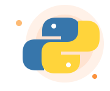
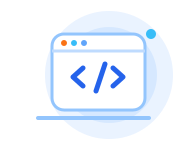

8–14 летPython
Игры, боты, алгоритмы и первые серьёзные программы.
Смотреть программу →Увлекательные уроки, которые превратят гаджеты в полезный инструмент. Поможем вашему ребёнку сделать первые шаги в IT, поддержим на каждом этапе и станем верным другом в мире технологий.
Меня зовут Сергей. С 2020 года я помогаю детям 6–14 лет осваивать программирование спокойно, понятно и с интересом. Для меня важно, чтобы ребёнок не просто запоминал команды, а учился мыслить, задавать вопросы и самостоятельно создавать проекты.
Я учитываю возраст, уровень подготовки и интересы каждого ученика, поэтому занятия проходят в комфортном темпе и без лишнего давления. На практике мы создаём игры и сайты, развиваем логику и креативность, а родители видят реальный прогресс ребёнка и его уверенность в своих силах.
От первых игровых проектов до настоящих сайтов и программ.

8–14 летИгры, боты, алгоритмы и первые серьёзные программы.
Смотреть программу →
10–14 летHTML, CSS и JavaScript — свой настоящий сайт с нуля.
Смотреть программу →3D-миры, игровые механики и программирование на Lua.
Смотреть программу →Пошаговая базовая программа: от первой команды print() до собственной игры и финального проекта. Каждое занятие — новая работающая программа, которую можно показать родителям.
Восемь модулей, которые идут от простого к сложному. Порядок можно менять — программа адаптируется под возраст и темп ребёнка.
Результат: ребёнок запускает свою первую программу и не боится ошибок.
Результат: программа-анкета, которая спрашивает имя и отвечает.
Результат: игра, которая реагирует на ответы игрока.
Результат: программа, которая повторяет действия без лишнего кода.
Результат: викторина или список дел на своих данных.
Результат: аккуратный код, который легко читать и менять.
Результат: собственная игра, в которую можно играть с друзьями.
Результат: готовый проект на Python и навык его защитить.
Расширенный учебный план: 5 блоков, 22 модуля и 191 тема — от основ Python, которые нужно знать, до разбора сайтов и собственного проекта на Django. Раскройте модуль, чтобы увидеть список тем.
Создаёт игры и программы, которые можно показать друзьям и родителям.
Учится раскладывать задачу на шаги и находить решение.
Хранит, перебирает и обрабатывает информацию внутри программы.
Заканчивает курс с личным проектом, который защищает перед родителями.
Пошаговая базовая программа: от первой HTML-страницы до собственного сайта с интерактивом на JavaScript. Каждое занятие — новый блок, который сразу видно в браузере.
Восемь модулей, которые идут от простого к сложному. Порядок можно менять — программа адаптируется под возраст и темп ребёнка.
Результат: своя первая HTML-страница с текстом.
Результат: многостраничный мини-сайт с картинками.
Результат: страница со своим фирменным стилем.
Результат: аккуратная раскладка из нескольких блоков.
Результат: сайт, который удобно смотреть с телефона.
Результат: страница, которая реагирует на действия.
Результат: интерактивный блок на своём сайте.
Результат: готовый сайт в интернете и навык его защитить.
Расширенный учебный план: 6 блоков, 22 модуля и 139 тем — от устройства интернета и основ HTML до сборщиков проектов, фреймворков и CSS Grid. Раскройте модуль, чтобы увидеть темы.
Собирает и публикует настоящую страницу, которую можно отправить друзьям.
Читает HTML и CSS и понимает, из чего состоит любая страница.
Подбирает цвета, шрифты и раскладку так, чтобы сайт было приятно смотреть.
Заканчивает курс с проектом, который можно показывать в школе и друзьям.
Пошаговая базовая программа: от первой детали в Studio до собственной игры на Lua, которую можно опубликовать. Ребёнок сразу видит результат — и играет в то, что сделал сам.
Восемь модулей, которые идут от простого к сложному. Порядок можно менять — программа адаптируется под возраст и темп ребёнка.
Результат: ребёнок собирает свою первую сцену.
Результат: собственная локация с оформлением.
Результат: первый работающий скрипт на Lua.
Результат: объекты, которые реагируют на игрока.
Результат: уровень-полоса препятствий.
Результат: игра с правилами и счётом.
Результат: понятный интерфейс для игрока.
Результат: готовая игра в Roblox и навык её защитить.
Создаёт игру, в которую можно играть с друзьями прямо в Roblox.
Пишет настоящие скрипты: события, переменные, условия и циклы.
Понимает, как устроено пространство, физика и движение в игре.
Заканчивает курс с игрой, которую защищает перед родителями.
Каждое занятие — маленький шаг к самостоятельному проекту.
Объясняем сложные вещи простыми словами, с примерами и визуализацией.
Минимум скучной теории: ребёнок сразу применяет знания в своём проекте.
Темп, задачи и проекты адаптируются под возраст и интересы ученика.
Каждый этап заканчивается готовым проектом, который можно показать родителям.
Учится разбивать большую задачу на понятные шаги.
Придумывает собственные идеи и превращает их в проекты.
Видит результат своей работы и учится не бояться ошибок.
Постепенно начинает искать решения и создавать без подсказок.
Начните с одного урока или выберите пакет для системного обучения.
ЗНАКОМСТВО
Бесплатно
30 минут
ОПЛАТА ПО ФАКТУ
30 BYN
50–60 минут
Для разовой консультации, разбора сложной темы или гибкого графика без обязательств.
ХИТ ПРОДАЖ
4 урока
100 BYN
25 BYN за урок Экономия 20 BYN
Занятия 2 раза в неделю, оплата раз в две недели. Комфортный платёж для семейного бюджета.
ДЛЯ ДВОИХ
Парное занятие · 55 минут
17 BYN
за урок с человека Абонемент на 8 занятий — 136 BYN с человека
Разовое занятие — 20 BYN с человека. Занимайтесь с другом или одноклассником: программа адаптируется под двух учеников одного уровня.
ПАКЕТ НА МЕСЯЦ
8 уроков
192 BYN
24 BYN за урок Экономия 48 BYN
Занятия 2 раза в неделю. Фиксированное место в расписании и максимальная скидка.
БЕЗ ДОПЛАТ И СЮРПРИЗОВ
Один на одинИндивидуальные занятия в Zoom.
Материалы бесплатноУчебники и домашние задания уже включены.
Удобный переносБез потери оплаты, если предупредить за 3–4 часа.
Выберите формат и количество занятий — сумма пересчитается автоматически.
Собрали вопросы, которые родители задают чаще всего перед стартом. Если своего не нашли — просто напишите нам, ответим лично.
Нет. Можно начинать с нуля. Перед стартом определим уровень и интересы.
Стандартный формат — 60 минут. Для младших детей длительность можно адаптировать.
Да. Для онлайн-занятий нужен компьютер и стабильный интернет.
Короткую обратную связь: что изучили, что получилось и над чем работаем дальше.
Да. Если интересы ребёнка изменились, программу можно скорректировать вместе с наставником.
Оставьте контакты — обсудим возраст, интересы ребёнка и подберём подходящий курс.